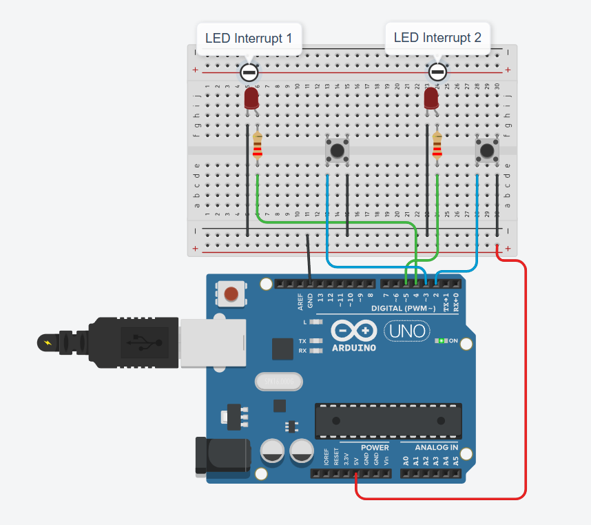

Багатозадачна система реального часу FreeRTOS для промислового контролера
Вершина вбудованої інженерії. Забудьте про спагетті-код усередині єдиної функції loop(). Запустіть справжнє ядро операційної системи реального часу (RTOS): ізолюйте опитування сенсорів, оновлення дисплея, аварійну сигналізацію та захистіть спільні дані м'ютексами.
⏱️ Чому промислові роботи та марсоходи NASA працюють на RTOS?
У звичайному скетчі Arduino інструкції виконуються послідовно один за одним. Якщо екран зависне під час оновлення пікселів — робот не помітить обрив кабелю і вріжеться в стіну. В операційній системі реального часу FreeRTOS процесор перемикає завдання кожну 1 мілісекунду (Preemptive Task Scheduler). Якщо виникає аварійна ситуація, пріоритетне завдання миттєво витісняє другорядні процеси та гарантує реакцію за лічені мікросекунди!
Схеми підключення: Багатозадачний промисловий стенд

Кнопка аварійного зупину підключена до піна апаратного переривання INT0 (D2). Світлодіод пульсу системи — пін D13, пін телеметрії — D12, аварійний сигналізатор — D11.

Діаграма витісняючої багатозадачності наживо
Дивіться як кванти часу процесора діляться між завданнями та спробуйте викликати апаратне переривання
💡 Коли ви натискаєте кнопку «Симулювати переривання», шедулер за 12 мікросекунд зберігає регістри CPU в стек поточного завдання і передає керування обробнику Task 1!
Чекліст компонентів промислового стенда
Arduino UNO R3
1 шт. • ATmega328P 2KB SRAMАпаратна основа з підтримкою витісняючого планувальника завдань FreeRTOS.
Кнопка аварійного зупину
1 шт. • Пін D2 (INT0)Апаратне переривання INT0 спрацьовує по спаду напруги FALLING.
3x Індикаторні LED
3 шт. • D13, D12, D11Візуалізація активності незалежних потоків: Heartbeat, Data, Alarm.
Резистори 220 Ом
3 шт. • СтрумообмежувачіДля безпечного струму кожного з трьох світлодіодних потоків.
Макетка та дроти
1 компл. • BreadboardМонтаж без паяльника для стенда багатопотокового тестування.
Що таке витіснення завдань та навіщо потрібен м'ютекс?
Вільна операційна система FreeRTOS створює для кожного завдання власний ізольований стек пам\'яті:
- Витісняюче планування (Preemption): Коли таймер Timer1 робить «тік» кожну 1 мс, шедулер перевіряє чергу пріоритетів. Якщо готове завдання з вищим пріоритетом — поточне завдання негайно зупиняється.
- М'ютекс (Mutual Exclusion Semaphore): Якщо два незалежні завдання одночасно спробують писати в послідовний порт
Serial.print(), символи перемішаються в кашу. М'ютекс працює як ключ: перше завдання замикає ключxSemaphoreTake(), друкує дані й віддає ключxSemaphoreGive().
Прошивка багатозадачного ядра FreeRTOS на Arduino
// SimpleArduino — Проєкт #10: Багатозадачна система реального часу FreeRTOS
// Вимагає встановлення бібліотеки "Arduino_FreeRTOS" через менеджер бібліотек
#include <Arduino_FreeRTOS.h>
#include <semphr.h>
// Піни світлодіодів та кнопки
const int LED_HEARTBEAT = 13;
const int LED_DATA = 12;
const int LED_ALARM = 11;
const int EMERGENCY_BTN = 2; // Апаратне переривання INT0
// Семафор м'ютекс для захисту шини Serial від одночасного доступу
SemaphoreHandle_t xSerialMutex;
// Прототипи функцій завдань
void TaskHeartbeat(void *pvParameters);
void TaskSensorAcquisition(void *pvParameters);
void TaskEmergencyAlarm(void *pvParameters);
volatile bool emergencyFlag = false;
void setup() {
Serial.begin(9600);
pinMode(LED_HEARTBEAT, OUTPUT);
pinMode(LED_DATA, OUTPUT);
pinMode(LED_ALARM, OUTPUT);
pinMode(EMERGENCY_BTN, INPUT_PULLUP);
// Створюємо м'ютекс
xSerialMutex = xSemaphoreCreateMutex();
// Прив'язка апаратного переривання на пін D2
attachInterrupt(digitalPinToInterrupt(EMERGENCY_BTN), isrEmergency, FALLING);
// Створення завдань у планувальнику FreeRTOS
// xTaskCreate(Функція, Ім'я, Розмір стеку (слів), Параметри, Пріоритет, Хендл)
xTaskCreate(TaskEmergencyAlarm, "Alarm", 128, NULL, 3, NULL); // Найвищий пріоритет
xTaskCreate(TaskSensorAcquisition, "Sensor", 192, NULL, 2, NULL); // Нормальний пріоритет
xTaskCreate(TaskHeartbeat, "Heart", 128, NULL, 1, NULL); // Низький пріоритет
// Планувальник запускається автоматично після виходу з setup()!
}
void loop() {
// У програмах з FreeRTOS функція loop() залишається порожньою,
// оскільки весь процесорний час контролюється планувальником ядра!
}
// Обробник переривання (ISR)
void isrEmergency() {
emergencyFlag = true;
}
// Завдання 1: Аварійний моніторинг (Пріоритет 3)
void TaskEmergencyAlarm(void *pvParameters) {
(void) pvParameters;
for (;;) {
if (emergencyFlag) {
digitalWrite(LED_ALARM, HIGH);
// Захоплюємо м'ютекс перед виведенням у Serial
if (xSemaphoreTake(xSerialMutex, portMAX_DELAY) == pdTRUE) {
Serial.println("!!! [ALARM] EMERGENCY INTERRUPT TRIGGERED !!!");
xSemaphoreGive(xSerialMutex);
}
vTaskDelay(1000 / portTICK_PERIOD_MS); // Пауза в 1 секунду
digitalWrite(LED_ALARM, LOW);
emergencyFlag = false;
}
// Віддаємо час іншим завданням на 50 мс
vTaskDelay(50 / portTICK_PERIOD_MS);
}
}
// Завдання 2: Опитування сенсорів (Пріоритет 2)
void TaskSensorAcquisition(void *pvParameters) {
(void) pvParameters;
for (;;) {
digitalWrite(LED_DATA, HIGH);
int rawValue = analogRead(A0);
if (xSemaphoreTake(xSerialMutex, portMAX_DELAY) == pdTRUE) {
Serial.print("[TASK 2] Sensor A0: ");
Serial.println(rawValue);
xSemaphoreGive(xSerialMutex);
}
digitalWrite(LED_DATA, LOW);
vTaskDelay(200 / portTICK_PERIOD_MS); // Період виклику 200 мс
}
}
// Завдання 3: Пульс ядра системи (Пріоритет 1)
void TaskHeartbeat(void *pvParameters) {
(void) pvParameters;
for (;;) {
digitalWrite(LED_HEARTBEAT, HIGH);
vTaskDelay(100 / portTICK_PERIOD_MS);
digitalWrite(LED_HEARTBEAT, LOW);
vTaskDelay(900 / portTICK_PERIOD_MS); // Рівно 1 спалах на секунду
}
}Матриця типових несправностей
Плата раптово зависає через кілька секунд після запуску
Переповнення стеку (Stack Overflow)! Пам'ять оперативки ATmega328P становить лише 2048 байтів. Якщо ви виділите занадто багато слів у xTaskCreate або оголосите масив усередині завдання, стек переповниться і затре пам'ять ядра. Зменшіть розмір стеку до 128 слів.
Виклик delay() паралізує всю систему RTOS
Суворе правило FreeRTOS: у завданнях категорично заборонено використовувати звичайний delay()! Замість нього завжди використовуйте vTaskDelay(ms / portTICK_PERIOD_MS), який переводить завдання в режим BLOCKED і віддає час іншим потокам.
Текст у Serial Monitor перетворюється на нерозбірливу кашу
Стан гонитви (Race Condition)! Два завдання одночасно відправляють байти в порт без блокування. Обов'язково використовуйте семафор-м'ютекс xSemaphoreTake() перед відправкою і xSemaphoreGive() після неї.
Низькопріоритетні завдання взагалі ніколи не виконуються
Голодування завдань (Task Starvation)! Високопріоритетне завдання не має блокуючих викликів vTaskDelay() і крутить нескінченний цикл, забираючи 100% часу процесора.
Перевірте себе: чому FreeRTOS називається операційною системою «реального часу»?
Оберіть єдину технічно правильну ознаку системи Hard Real-Time: